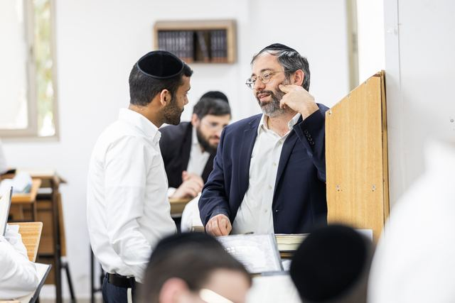
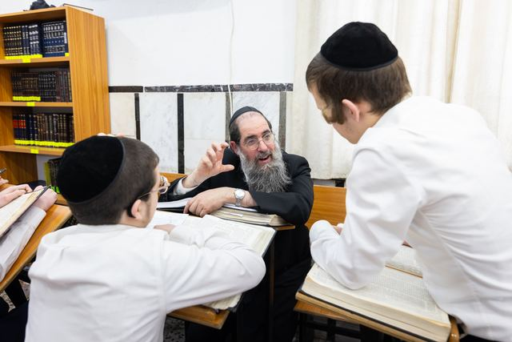
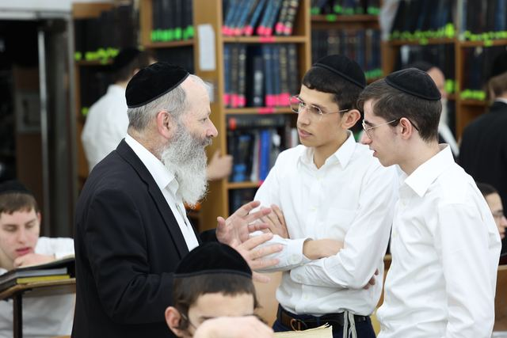
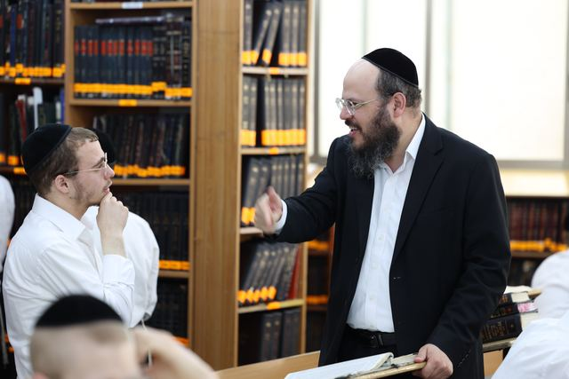
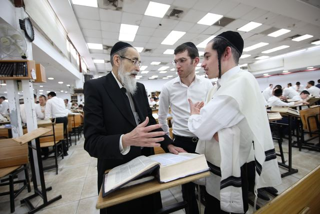

תמונה זמנית

הישיבה הגדולה בעולם
עשרות ישיבות וכוללים, אלפי תלמידים ומיליוני שעות לימוד בכל חודש, ברשת אחת שייסד מרן הרב שטיינמן זצ״ל.
בית אחד של תורה, בכל רחבי הארץ
וְהָגִיתָ בּוֹ יוֹמָם וָלַיְלָהיהושע א, ח
בחודש סיון תשנ״ח ייסד מרן הרב אהרן יהודה לייב שטיינמן זצ״ל את ישיבת ארחות תורה בבני ברק. מאז צמחה הישיבה לרשת שלמה: ישיבות גדולות, ישיבות לצעירים וכעשרים כוללי אברכים.
כל מוסד הוא בית בפני עצמו, וכולם יחד נושאים דרך אחת. בחור יכול לגדול ברשת משנותיו הראשונות בישיבה ועד שנותיו בכולל, בלי לצאת מהבית שמרן הקים.
למסע חייו של מרן ←
הדרך שהתווה מרן
בשקט ובענווה
מרן ביקש בית שבו כל בחור יכול לגדול בתורה בשקט, בענווה ולשם שמים.
בלי תחרות
על פי הוראתו, ושלא כמקובל, השיעורים לא פוצלו לשנים, כדי למנוע תחרות בין התלמידים.
מסגרת קרובה
בישיבות הרשת נשמרים ועדים קטנים מהמקובל, על פי הוראת מרן, כדי שכל בחור יזכה ליחס אישי.
כל בחור יקר
מרן לימד שעיקר החינוך הוא בדוגמה אישית, והתנגד להרחקת תלמידים ממוסדות לימוד.
בית אחד, לכל הדרך
הרשת במספרים
0
בחורים לומדים ברשת
0
ישיבות וכוללים ברחבי הארץ
0
אברכים בכוללי הרשת
0
שעות לימוד בכל חודש
מהגליל ועד הנגב
- רנה של תורהכרמיאל · ישיבה גדולה
- נוף הגלילכולל אברכים
- עפולהכולל אברכים
- רכסיםכולל אברכים
- ארחות תורהבני ברק · ישיבה גדולה
- רוממות התורהבני ברק · ישיבה לצעירים
- תורה בתפארתהאלעד · ישיבה גדולה
- תורת חסדאלעד · ישיבה לצעירים
- מודיעין עילית3 סניפי כולל
- טלז סטוןכולל אברכים
- אמרי משהירושלים · ישיבה לצעירים
- ביתר עיליתכולל אברכים
- בית שמשכולל אברכים
- נר זרחמושב עוצם · ישיבה גדולה
כוללי הרשת פועלים גם בבני ברק, ירושלים, כרמיאל, אלעד ועוצם. לכל הכוללים ←
הנהגת הרשת

תמונה זמניתהרב איתמר גרבוז
ראש הישיבה
תמונה זמניתהרב ברוך דב דיסקין
ראש הישיבה
תמונה זמניתהרב יחיאל קלרמן
ראש הישיבהתמונה זמנית
הרב צבי יהודה אדלשטיין
ראש הישיבה
תמונה זמניתיעקב וירז׳בינסקי
מנכ״להחזיקו את לימוד התורה
עֵץ חַיִּים הִיא לַמַּחֲזִיקִים בָּהּמשלי ג, יח
כל החזקה היא בכל הרשת כולה: שעה אחת שלכם היא שעה של 4,500 בחורים הלומדים יחד.